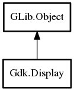

- Display
- get_default
- open
- open_default_libgtk_only
- Display
- beep
- close
- device_is_grabbed
- flush
- get_app_launch_context
- get_default_cursor_size
- get_default_group
- get_default_screen
- get_device_manager
- get_event
- get_maximal_cursor_size
- get_n_screens
- get_name
- get_pointer
- get_screen
- get_window_at_pointer
- has_pending
- is_closed
- keyboard_ungrab
- list_devices
- notify_startup_complete
- peek_event
- pointer_is_grabbed
- pointer_ungrab
- put_event
- request_selection_notification
- set_double_click_distance
- set_double_click_time
- store_clipboard
- supports_clipboard_persistence
- supports_composite
- supports_cursor_alpha
- supports_cursor_color
- supports_input_shapes
- supports_selection_notification
- supports_shapes
- sync
- warp_pointer
- closed
- opened
Display
Object Hierarchy:
Description:
Namespace: Gdk
Package: gdk-3.0
Content:
Static methods:
- public static weak Display? get_default ()
- public static weak Display? open (string display_name)
- public static weak Display? open_default_libgtk_only ()
Creation methods:
- protected Display ()
Methods:
- public void beep ()
- public void close ()
- public bool device_is_grabbed (Device device)
- public void flush ()
- public AppLaunchContext get_app_launch_context ()
- public uint get_default_cursor_size ()
- public weak Window get_default_group ()
- public weak Screen get_default_screen ()
- public weak DeviceManager? get_device_manager ()
- public Event? get_event ()
- public void get_maximal_cursor_size (out uint width, out uint height)
- public int get_n_screens ()
- public unowned string get_name ()
- public void get_pointer (out Screen screen, out int x, out int y, out ModifierType mask)
- public weak Screen get_screen (int screen_num)
- public weak Window? get_window_at_pointer (out int win_x, out int win_y)
- public bool has_pending ()
- public bool is_closed ()
- public void keyboard_ungrab (uint32 time_)
- public unowned List<Device> list_devices ()
- public void notify_startup_complete (string startup_id)
- public Event? peek_event ()
- public bool pointer_is_grabbed ()
- public void pointer_ungrab (uint32 time_)
- public void put_event (Event event)
- public bool request_selection_notification (Atom selection)
- public void set_double_click_distance (uint distance)
- public void set_double_click_time (uint msec)
- public void store_clipboard (Window clipboard_window, uint32 time_, Atom[] targets)
- public bool supports_clipboard_persistence ()
- public bool supports_composite ()
- public bool supports_cursor_alpha ()
- public bool supports_cursor_color ()
- public bool supports_input_shapes ()
- public bool supports_selection_notification ()
- public bool supports_shapes ()
- public void sync ()
- public void warp_pointer (Screen screen, int x, int y)
Signals:
Inherited Members:
All known members inherited from class GLib.Object